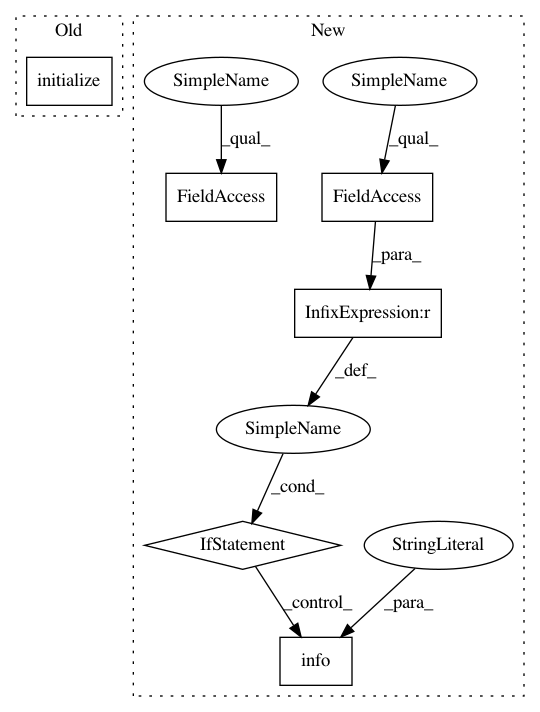

5341cc169bcbd771cf2ea413424eb28f2431fe68,pycorrector/transformer/infer.py,,,#,8
Before Change
"会能够大幅减少互相抱怨的情况。"
]
inputter = onmt.inputters.ExampleInputter(source_inputter, target_inputter)
inputter.initialize({
"source_vocabulary": config.vocab_path,
"target_vocabulary": config.vocab_path
})
translate(config.model_dir,
inputter,
config.src_test_path,
batch_size=config.batch_size,
After Change
model.initialize(data_config)
// Load model
checkpoint_manager = tf.train.CheckpointManager(checkpoint, config.model_dir, max_to_keep=5)
if checkpoint_manager.latest_checkpoint is not None:
tf.get_logger().info("Restoring parameters from %s", checkpoint_manager.latest_checkpoint)
checkpoint.restore(checkpoint_manager.latest_checkpoint)
translate(config.src_test_path,
batch_size=config.batch_size,
beam_size=config.beam_size)
In pattern: SUPERPATTERN
Frequency: 3
Non-data size: 6
Instances
Project Name: shibing624/pycorrector
Commit Name: 5341cc169bcbd771cf2ea413424eb28f2431fe68
Time: 2019-12-20
Author: xuming624@qq.com
File Name: pycorrector/transformer/infer.py
Class Name:
Method Name:
Project Name: tensorflow/models
Commit Name: df89d3e02a41e34581e8065cf5868a9570fa3010
Time: 2020-06-30
Author: bfusinska@google.com
File Name: research/delf/delf/python/training/train.py
Class Name:
Method Name: main
Project Name: OpenNMT/OpenNMT-tf
Commit Name: 848d8b1e70d3f85304476518c9bd5440825ecf73
Time: 2019-07-12
Author: guillaume.klein@systrangroup.com
File Name: examples/library/minimal_transformer_training.py
Class Name:
Method Name: main